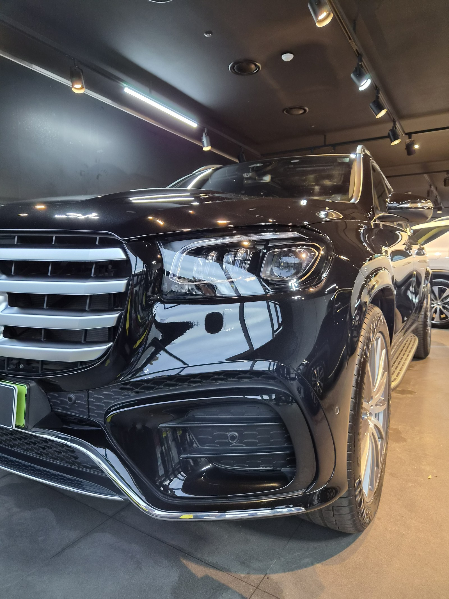
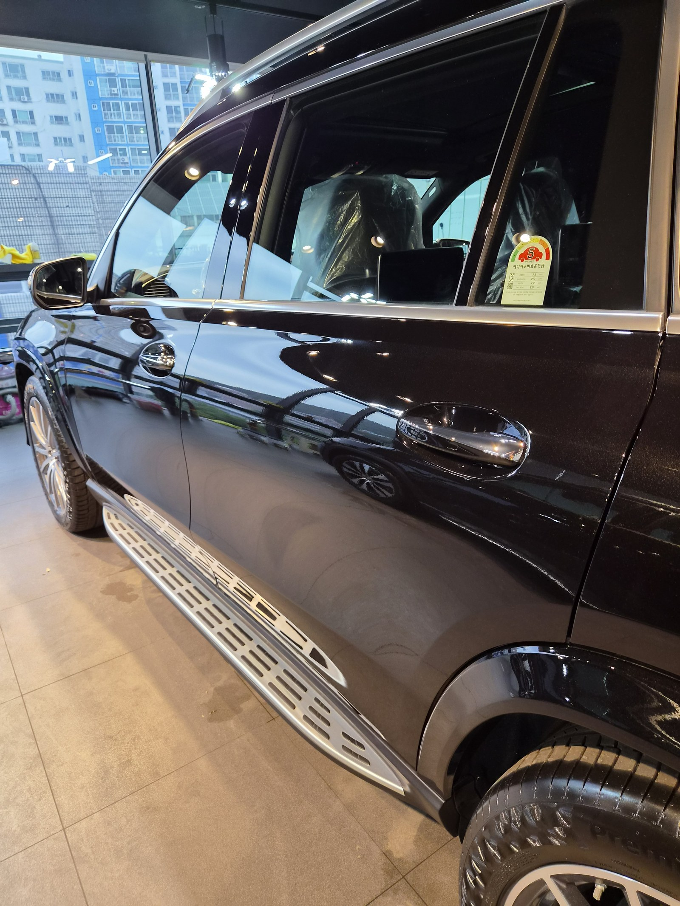
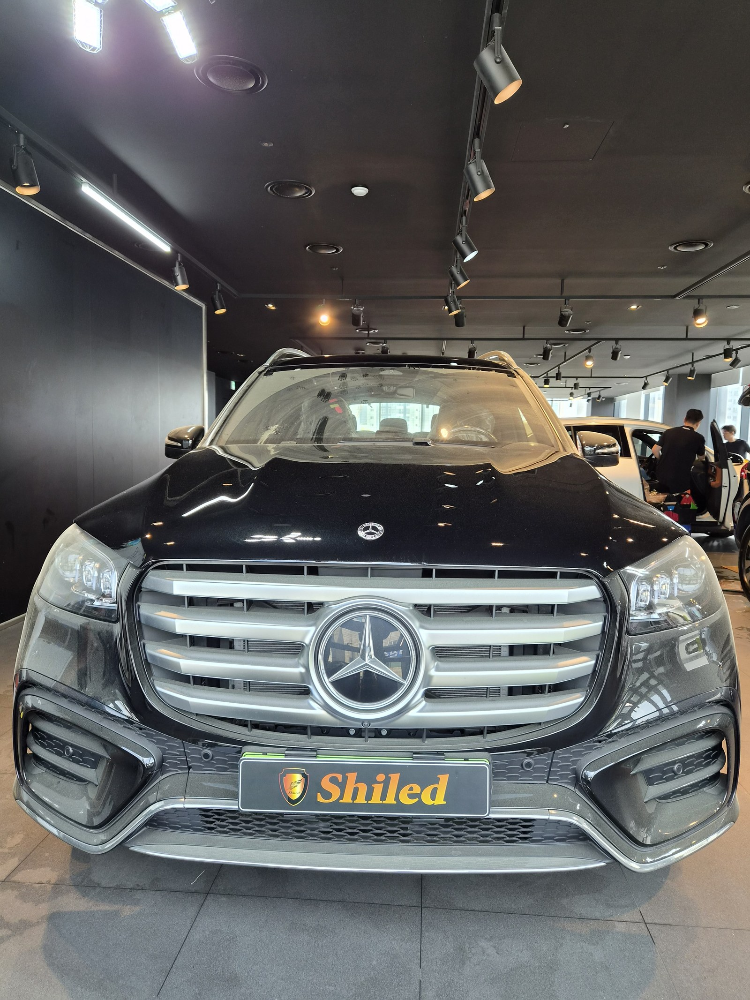
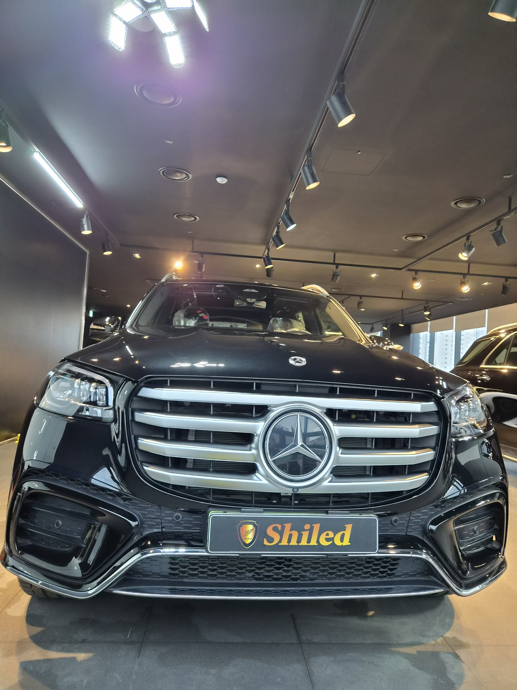
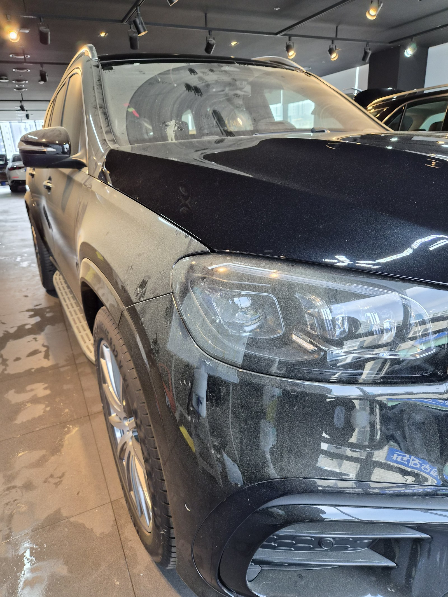
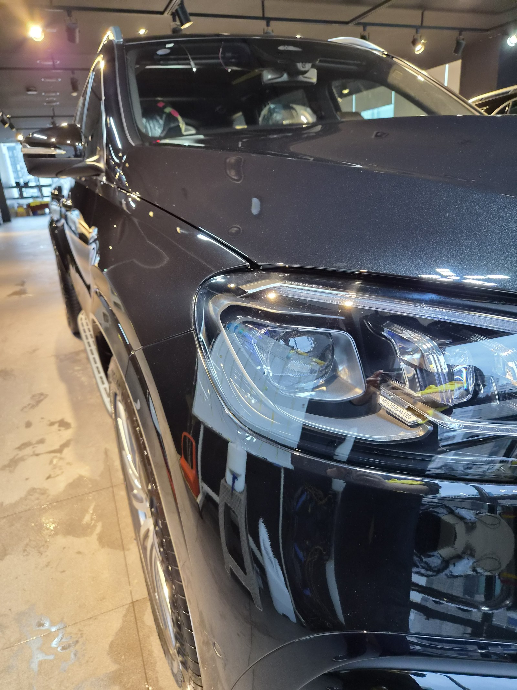
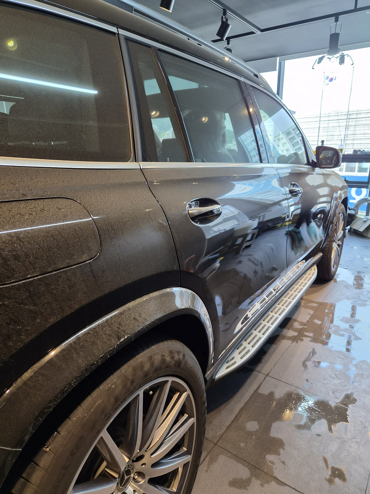
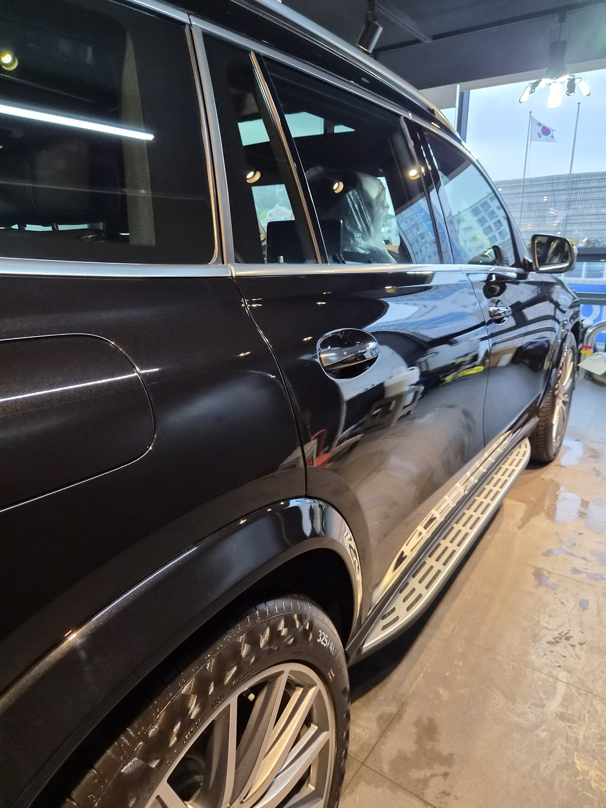

부산 쉴드광택에 들어온 벤츠 GLS450입니다. 검정 대형 SUV입니다.
이 차는 큰 패널에 깔린 잔기스와 워터스팟을 광택으로 정리해 깊은 블랙으로 마감했습니다.

대형 SUV는 광택할 때 뭐가 다른가
면적이 넓어 시간이 더 걸립니다.
보닛·루프·도어처럼 큰 평면이 많습니다. 그래서 잔기스도, 광택 후 차이도 그만큼 크게 보입니다. 면이 넓을수록 한 구역씩 균일하게 잡아야 얼룩 없이 떨어집니다.
검정 차는 왜 광택부터 해야 하나
검정은 빛을 그대로 비추는 색입니다. 그래서 잔기스와 워터스팟이 가장 잘 드러납니다.
입고 때 보닛과 도어를 보니 빛이 산란해 늘 뿌옇게 떠 있었습니다. 표면이 정리되지 않으면 검정은 계속 어둡고 탁하게만 보입니다.
기술자의 팁
검정은 발색이 깊은 만큼 잔기스도 가장 잘 보이는 색입니다. 광택으로 표면을 평탄하게 정리해야, 빛이 왜곡 없이 떨어지면서 검정 특유의 깊이가 살아납니다.
광택은 무조건 세게 깎는 게 정답이 아닙니다
잔기스를 없앤다고 클리어코트(도장면 맨 위 보호막)를 마구 깎으면, 정작 도장 수명을 깎는 일이 됩니다.
그래서 잔기스 깊이를 보고 필요한 만큼만 컴파운드와 패드를 맞춰 깎습니다. 16년간 직접 시공하며 잡아온 감각입니다.
전처리가 먼저입니다
광택 전에 표면 오염부터 걷어내야 합니다.
디테일링 세차로 묵은 오염을 닦고, 철분 제거제로 박힌 쇳가루를 녹여냅니다. 이 과정을 건너뛰면 오염을 패드로 끌고 다니며 오히려 잔기스를 더 냅니다. 눈에 안 보이는 오염까지 잡는 게 퀄리티의 시작입니다.

같은 자리를 전후로 비교하면
말로 "잔기스를 걷어냈습니다"라고 하는 것보다, 같은 자리를 전후로 비교하는 게 정확합니다.
아래 사진은 작업 전과 작업 후에 같은 위치를 같은 조명 아래에서 찍은 것입니다.


전면 — 뿌옇던 반사가 또렷해지고 검정이 깊어졌습니다


앞범퍼 주변 — 탁하던 면에 조명이 선명하게 맺힙니다


측면 도어 — 넓은 면일수록 반사 차이가 크게 보입니다
마감 후
측면 도어와 전면 패널에 조명이 왜곡 없이 떨어집니다.
잔기스가 정리된 평탄한 표면이라야 이렇게 반사가 또렷합니다. 검정 특유의 깊은 블랙이 살아난 상태입니다.


광택 후, 이렇게 관리하세요
광택으로 정리한 표면은 그대로 두면 잔기스가 다시 쌓입니다.
자동세차(기계세차)는 브러시가 잔기스를 만드니 피하시는 게 좋습니다. 상태를 오래 유지하려면 광택 위에 유리막코팅을 올려 보호막을 만드는 쪽을 권합니다. 차량 상태와 예산에 맞춰 상담해 정합니다.
자주 묻는 질문
Q. 대형 SUV는 광택할 때 뭐가 다른가요?
A. 면적이 넓어 시간이 더 걸립니다. 큰 평면이 많아 잔기스도, 광택 후 차이도 크게 보입니다. 면이 넓을수록 한 구역씩 균일하게 잡아야 얼룩 없이 떨어집니다.
Q. 검정 차는 왜 광택부터 해야 하나요?
A. 검정은 빛을 그대로 비춰 잔기스와 워터스팟이 가장 잘 드러납니다. 표면이 정리되지 않으면 빛이 산란해 늘 뿌옇게 보입니다. 광택으로 표면을 정리해야 깊은 블랙이 살아납니다.
Q. 워터스팟은 광택으로 지워지나요?
A. 초기 워터스팟은 광택으로 대부분 정리됩니다. 표면에 얹힌 단계라면 컴파운드로 걷어낼 수 있습니다. 다만 오래 방치돼 도장 속까지 파고든 경우는 흔적이 남을 수 있어, 상태를 직접 보고 판단합니다.
Q. 광택을 하면 도장이 얇아지지 않나요?
A. 필요한 만큼만 깎습니다. 클리어코트 두께를 보고 잔기스 깊이에 맞춰 컴파운드와 패드를 조절합니다. 무조건 세게 깎는 게 정답은 아닙니다.
Q. 쉴드광택 위치와 예약은 어떻게 하나요?
A. 부산 남구 유엔로220 1F 쉴드광택입니다. 예약·상담은 010-3384-1850, 대표 최한중이 직접 상담하고 책임 시공합니다.
신차든 출고한 지 된 차든, 시작점이 다르면 결과도 다릅니다.
제품을 직접 만드는 사람이 직접 시공합니다.
부산에서 광택·유리막코팅을 고민 중이시면 편하게 연락 주십시오.
어떤 차를 타냐보다 어떻게 타냐가 중요합니다~!
📞 010-3384-1850 견적 문의쉴드광택 · 부산 남구 유엔로220 1F · 대표 최한중